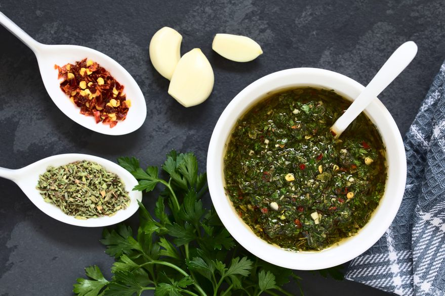

Chimichurri

The Chimichurri is an uncooked sauce used both as an ingredient in cooking and as a table condiment
for grilled meat.
Found in Argentinian and Uruguayan cuisines, the sauce comes in a green and red version.
Ingredients
- 1 cup fimly packed fresh continental parsley leaves, chopped
- 1 cup firmly packed fresh corlander sprigs, chopped
- 1 garlic clove, crushed
- 125ml (1/2 cup) extra virgin olive oil
- 1 1/2 tbsp red wine vinegar
- Pinch of dried chilli flakes
Steps
- Combine the parsley, coriander, garlic, oil, vinegar and chilli flakes in a small bowl.
- Season with salt and pepper.